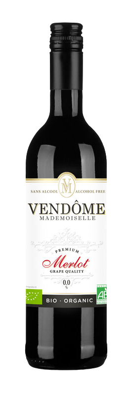

VENDÔME SANS
BULLES ROUGE
Acheter
BULLES ROUGE
Vendôme Mademoiselle Rouge Merlot, la boisson sans alcool à base de vin désalcoolisé dont les ingrédients sont issus de l’agriculture biologique. Elle est élaborée à partir d’un cépage Merlot rouge, aux petites baies noires, cultivé sur un sol calcaire dans la région de La Mancha sous le soleil d’Espagne.
De couleur rubis, sombre et dense, le Merlot offre une palette aromatique semblable aux plus grands vins alcoolisés. Elle s’exprime sur des arômes de fruits noirs comme le cassis et la mûre mais aussi la cerise et le pruneau. Dès la première gorgée, le palais est alors marqué par des notes de cuir, de sous-bois et d’épices. Le Merlot est souple en bouche avec un bon équilibre, des tanins persistants et une finale sèche.
A servir entre 10 et 12°C.
De couleur rubis, sombre et dense, le Merlot offre une palette aromatique semblable aux plus grands vins alcoolisés. Elle s’exprime sur des arômes de fruits noirs comme le cassis et la mûre mais aussi la cerise et le pruneau. Dès la première gorgée, le palais est alors marqué par des notes de cuir, de sous-bois et d’épices. Le Merlot est souple en bouche avec un bon équilibre, des tanins persistants et une finale sèche.
A servir entre 10 et 12°C.
DÉTAILS :
Calories pour 100 ml : 20,9 calories
Degré d’alcool : moins de 0,0 % alc./vol
Vendôme Mademoiselle Rouge, une alternative au vin alcoolisé de plaisir fruité et agréable, facile d’accès, est recommandée avec presque tous les plats, particulièrement avec les viandes en sauce, le gibier et peut être consommée à tout moment.